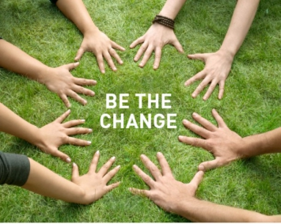

--- 
title: Du bist die Veränderung
lead: "Eine Vision ohne Plan ist nur ein Traum. Ein Plan ohne Vision ist nur Plackerei. Aber eine Vision mit Plan kann die Welt verändern."
---


    	    
	   
      
<div class="row">
  <div class="span4">
	
  		
		  
		  
	  <h4 align="center">Follow Your Vision</h4> 
	   <br>
	   <br>	  
	  <div class="well">

	
		<h3><a href="/blogs/">Blog</a></h3>
		
	<% (@site.sorted_articles[0..4]).each do |post| %>
		<h4><%= link_to post[:title], post.path %></h4>
		<p><small><%= get_pretty_date(post) %> - 	
	    <%= link_to(post[:lead], post.reps[0], :id => 'bloglink') %> </small></p>
	
	<% end %>

   </div> <!-- hero -->
 </div> <!-- span -->    		  

      		
  <div class="span8">
      			<h2 class="">Wo um alles in der Welt gehen wir hin?
      			Und welchen Einfluss haben wir darauf? 
      			Wir freuen uns  dich zum Symposium 'Welt im Wandel' einzuladen.</h2>
      		      		
<p class="lead">
<em>Sonntag 3. März, 11-18 Uhr, Steffisburg</em><br>
Groove and Move : <a href="http://www.g-a-m.ch" target="_blank">www.g-a-m.ch</a><br>
Mehr Infos : <a href="docs/flyer-steffisburg-2013.03.03.pdf" target="_blank">hier</a><br>
Anmeldung unter : hello@be-the-change.ch  079 844 66 54<br>
</p>

<p class="lead">
<em>Samstag 4. Mai, 10 - 17 Uhr, Biel/Bienne</em><br>

Veranstalter: A. Langenegger, D. Ragettli , A. Kaufmann<br>
Veranstaltungsort: <a href="http://villarenaissance.wordpress.com" target="_blank">Villa ReNaissance</a><br>
Organisations-/Wertbeitrag: auf Spendenbasis<br>
Verpflegung: Bringe etwas für das gemeinsame Mittagsbuffet mit.<br>
Anmeldung unter: hello@be-the-change.ch  079 844 66 54<br>
</p>

<p class="lead">
<em>Sonntag 30 Juni, 11-18 Uhr, Lützelflüh</em><br>
Waldhaus Zentrum Lützelflüh<br>
Waldhaus 36, CH 3432 Lützelflüh<br>
Infos und Anmeldung : <a href="http://www.waldhaus.ch/center/seminare/angebot/symposium-welt-im-wandel-2013-06-30" media="" target="_blank">hier</a>  

</p>

<h3><a href="/termine/">Termine</a></h3>
		
	<% (@site.sorted_articles[0..4]).each do |post| %>
		<p class="lead"><em><%= link_to post[:title], post.path %></em><br>
		<small><%= get_pretty_date(post) %> - 	
	    <%= link_to(post[:lead], post.reps[0], :id => 'bloglink') %> </small></p>
	
	<% end %>


      		<p>
Um diese und andere Fragen geht es im Symposium 'Welt im Wandel'. Die eintägige Veranstaltung besteht aus aktuellen Informationen, dynamischen Interaktionen und kraftvollen Kurzfilmen, in denen einige der wichtigsten Denker und Aktivisten unserer Zeit zu Wort kommen. Das Anliegen des Symposiums ist, unsere Herzen und Augen für die aktuelle Situation zu öffnen und uns zu inspirieren und zu ermutigen, selbst aktiver Teil einer grossartigen Veränderung auf diesem Planeten zu werden. Eine Veränderung, die jeden braucht und nur gemeinsam und umfassend geschehen kann.
      		</p>


 
<p>Weiterführende Informationen findest Du auch auf www.pachamama.org 
und auf www.be-the-change.de.</p>
      		</div>
      </div>

      

   


